Everyone has an innate passion(whether it is singing, playing badminton or writing) which is a major source of joy in their lives. However, there’s a severe lack of avenues to pursue these passions further. Offline options are often lacklustre and expensive whereas there is little to no high quality guided content available online.
FrontRow is an expert-led learning platform for creative arts, sports & fitness and hobbies. Founders of FrontRow had raised a seed of $3M from LightSpeed and were looking to craft a consumer ed-tech brand tackling this problem space.
Context & branding
A plethora of online learning startups have emerged in India in recent years to serve school-age students. More than 250 million students are enrolled across schools in urban and rural parts of the country. By the year, 2019/20 we have had unicorn companies like Byju’s and Unacademy solving for the massive STEM test-prep market within the overall online education space in India.
When one looks away from the traditional STEM learning paths in India, there is a dire lack of quality coaching and expert teaching in skills like playback-singing, badminton or music composition. The learnings from the best in these fields were limited by human and geographical challenges. With the pandemic bringing about paradigm shifts in content consumption and delivery in India, we saw increasing demand from students wanting to pursue their passions online. Moreover, frustrated by the severe lack of learning paths & solutions around hobbies, interests and non-academic pursuits of a student, founders of FrontRow decided to build for the massive Indian Ed-tech audience with their underlying passions at the core.
Skills in many of these categories are not codified as in hard sciences and often possessed only by those who’ve reached the very pinnacle of the field.
FrontRow’s mission is to codify the tribal knowledge gained from years of practice and struggle across these fields and create a platform to enable even casual learners to learn and pursue excellence in these fields.
I began working closely with the founding team at FrontRow on creative strategy, visual identity and motion language, the result is a well-crafted consumer edutainment brand language that helps to inspire a learning lifestyle in everyone.
The design language reflects the product’s sophisticated and best-in-class offering while allowing the wide range of topics/interests, instructors and their unique personalities to come through. FrontRow’s identity is tailored to offer: a cinematic, frontrow seat to a unique learning platform that opens up to an impressive array of top-tier instructors within.
Brand/product tenets
- We want to enable everyone to pursue their passion in learning.
- We want everyone to learn from the very best in the industry
- We want to provide a platform for students to showcase their talent and foster growth in a community of like-minded individuals
Brand personality
- Inspiring (Aspirational)
- Trustworthy (Credible/Expertise)
- Inviting & Approachable (I can do this/everyone can learn this)
- Energetic (foster community learning/creative expression)
Early explorations of the logoform
ConceptThe classroom of one.
Explored recognisable shapes and forms that depict a scene of an exclusive/premium classroom, where the student gets to learn from the very best.
Concepts that showcase a cinematic element or a ‘front row seat’ to the celebrity/expert’s class.
ConceptDenote the continuous upskilling nature of learning anything.
Learning path in non-academic categories are not as codified as in hard sciences and often possessed only by those who’ve reached the very pinnacle of the field. ‘Steps’ as an ancient symbol codifies the tribal knowledge gained from years of practice and struggle across these fields.
From all the explorations of the logoform, we narrowed down shapes and arrangements that best reflected FrontRow’s core values of being a sophisticated learning platform and yet an approachable consumer brand.
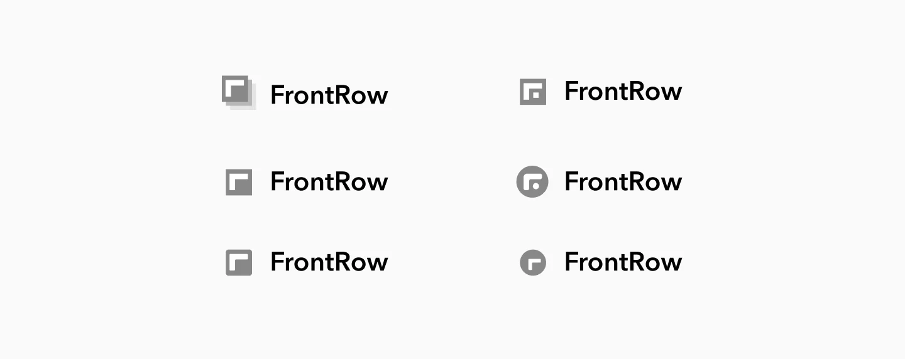
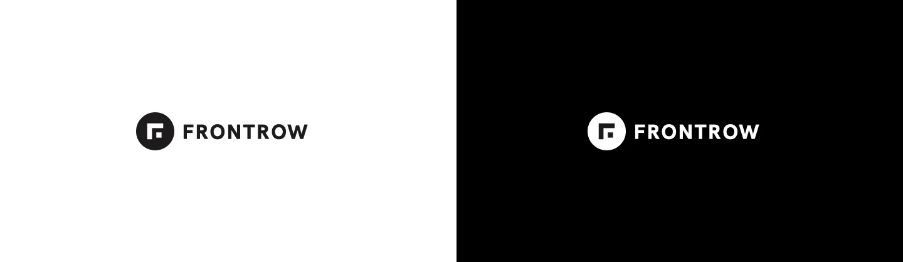
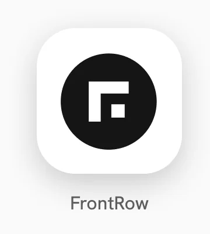
Mastery & Sophistication
yet approachable
HK Grotesk
HK Grotesk™ is a sans serif typeface inspired by the classic grotesques.
Geometry, metrics, punctuations and OpenType features have been updated to support a wide range of projects such as environmental signage, textface for books and magazines, Interface, Websites and Mobile Applications.
- Design and Development
- Alfredo Marco Pradil
- Foundry
- Hanken Design Co.
- Glyphs
- 600+ per style
- Styles
- 14
- Class
- Sans Serif
Learn from the best.
Watch hundreds of lessons from the best,
as they share their stories, skills, shortcuts, failures, and successes.
6 Categories. 100+ Lessons. All in one place.
Get started anytime, anywhere.
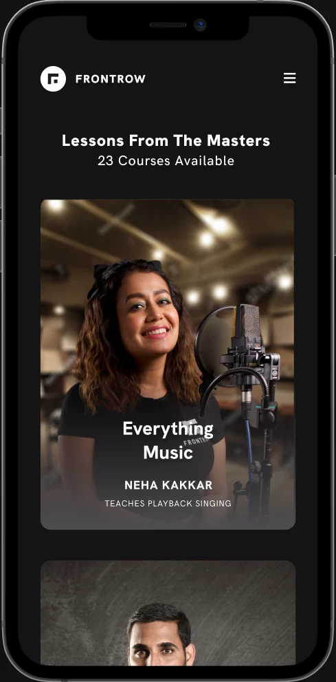
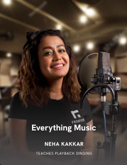
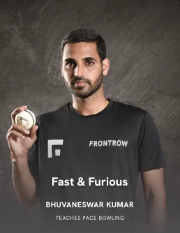
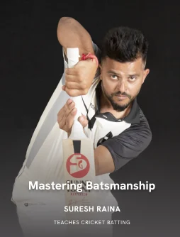
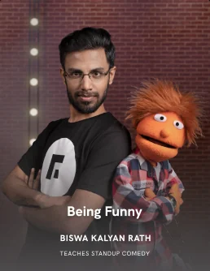
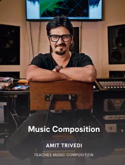
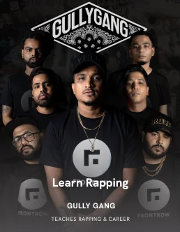
Lessons from ExpertsProduct Illustrations & animations across 6 categories
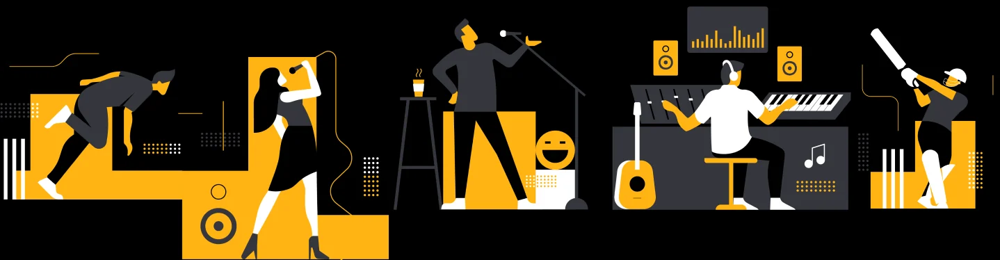
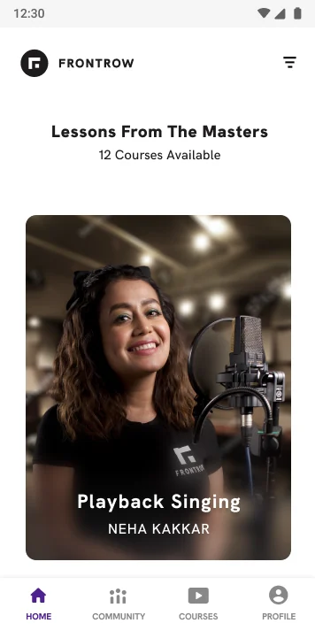
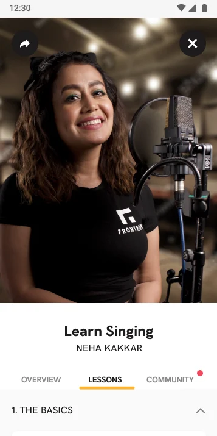
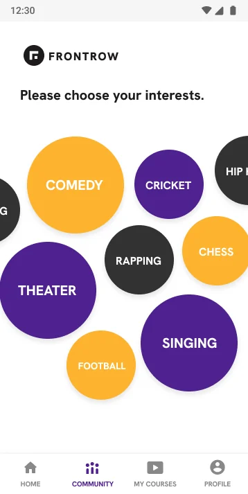
User interface animations/prototypes
Cameo: motion design language
Our motion design principles were inspired by the underlying craft in each of these experts. We watched hundreds of hours of course materials taught by the best of the best in every field, we watched these experts in-situ to understand their movement, technique, approach and distinguished secrets - and deconstructed them to create a unique behaviour that we call the ‘Cameo’.
Cameo - originally meaning "a small piece of artwork," refers to a bit part (usually a brief, non-speaking or walk-on role that is uncredited or unbilled) or special screen appearance by a famous actor, director, or prominent entity.
Hence we named the motion-design system 'Cameo' to illustrate how FrontRow as a brand sneaks in-between the content and plays it's part in communicating key concepts, insights from lessons and give structure to the overall ebb and flow of the course content. It is an entire motion graphics intent that has its roots firmly in the fundamentals of learning and craft to create a beautiful, elegant and bold motion system for all touch-points of FrontRow as a brand.
Basic motion philosophy: birth & reveal
Brand and UI elements following birth + reveal
ApplicationBrand intro for course lessons
ApplicationMid-lesson transitions
The use of footage blur to change the context/scene in the background, helping learners adapt to the change in context seamlessly
ApplicationLesson end transitions
We follow the same animation principle at the end of each lesson, with interface for lesson summary and next-up cues.
ApplicationProduct illustrations
We follow the same animation principle for all the various category illustrations within the product. So far, FrontRow has launched courses in 6 categories.
ApplicationCourse trailer cuts
Future track
FrontRow has officially launched the product in October 2020 and the iOS & Android apps have hit more than a 200,000 download since launch. We have launched expert courses and learning tracks across Playback singing, Cricket (Batting, Pace and Spin Bowling), Rapping, Standup comedy and Music composition. The product and design teams since have been working on features that extend beyond the expert course videos into weekly and monthly community cohorts of learners.